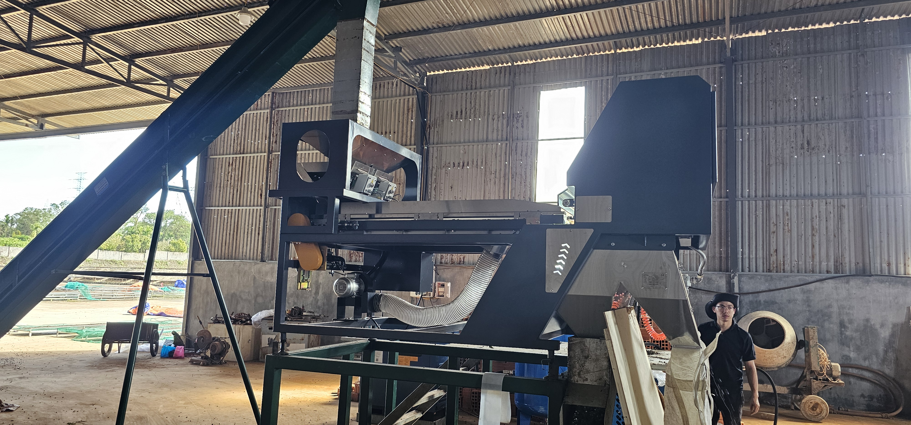
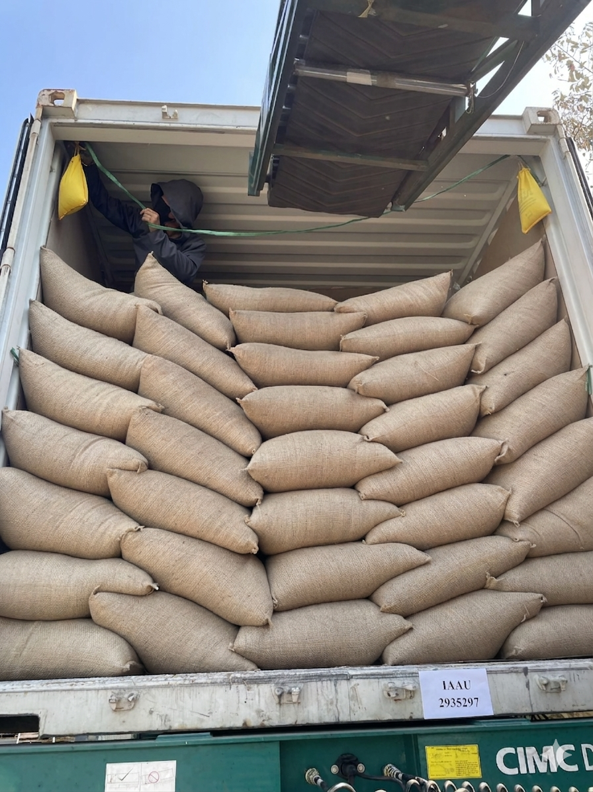
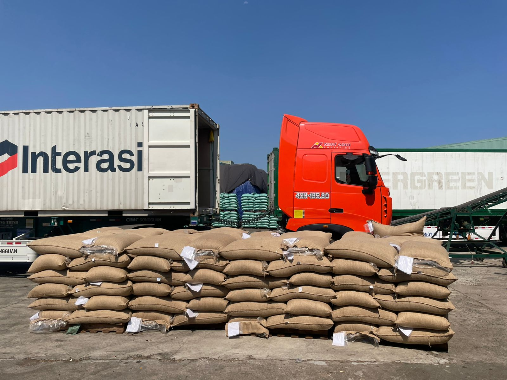

STEP 01
Cultivation · 재배
화산 고산지대에서 시작됩니다
해발 700m 이상의 화산 고원에서 커피 나무는 더 깊게 뿌리를 내리고, 미네랄이 풍부한 토양에서 천천히 성숙합니다. 이 느린 성장 속도가 바디의 깊이를 만듭니다.
결과 — 첫 모금에서 느껴지는 묵직한 바디감과 미네랄 밀도감


화산토에서 자라고, 완숙 체리만 손으로 수확하고, 내추럴 공정으로 천천히 완성한 프리미엄 베트남 로부스타입니다. 묵직한 바디감 위에 체리와 라즈베리의 과일 향미, 그리고 길게 이어지는 스모키한 피니시가 층을 이루도록 구성했습니다.
볼케이노 루비는 로부스타가 거칠고 단조롭다는 인식에서 출발하지 않습니다. 더 높은 산지, 더 엄격한 수확, 더 정밀한 가공을 통해 묵직함과 복합 향미를 함께 보여주는 방향으로 설계했습니다.

수천 년 전 화산 활동이 남긴 화산재 토양과 큰 일교차는 볼케이노 루비의 밀도감 있는 바디와 깊은 향미의 출발점입니다.
낮은 기압과 선선한 기온 속에서 체리는 천천히 익고, 그 시간만큼 향미의 복합도가 높아집니다.
낮의 태양과 밤의 서늘함이 반복되며 체리 안의 당분이 더 단단하게 농축됩니다.
철분과 마그네슘, 칼슘이 쌓인 토양은 뿌리를 더 깊게 만들고 원두의 질감에 밀도감을 더합니다.
천천히 익은 체리는 루비처럼 깊은 붉은빛을 띠며, 그 안에 단맛과 향미를 오랫동안 쌓아 올립니다.
수확자의 손끝, 건조장의 태양, 선별기의 정밀함까지 모든 과정이 컵 안의 인상으로 연결됩니다.
해발 700m 이상의 화산 고원에서 커피 나무는 더 깊게 뿌리를 내리고, 미네랄이 풍부한 토양에서 천천히 성숙합니다. 이 느린 성장 속도가 바디의 깊이를 만듭니다.
기계는 익은 것과 덜 익은 것을 구분하지 못하지만, 사람의 손은 그 차이를 골라냅니다. 루비처럼 깊이 익은 체리만 손수확해 단맛의 출발점을 높입니다.

체리 전체를 건조대에 펼쳐 과육이 생두를 감싼 채 발효가 진행되도록 둡니다. 당분과 과일향이 서서히 스며들며 체리와 라즈베리 계열의 향미가 형성됩니다.

목표 수분 10~12.5%에 맞출 때까지 천천히 건조합니다. 빠르면 향이 고르지 않고, 느리면 리스크가 생기기 때문에 시간을 들여 균형 있게 마무리합니다.

색채선별기로 생두 한 알씩 상태를 확인하고, G1 등급과 S18 사이즈 기준에 맞는 원두만 남깁니다. 균일한 원두는 로스팅과 추출의 일관성을 높입니다.

볼케이노 루비의 향미는 단순히 산지에서 끝나지 않습니다. 과육을 남긴 채 발효와 건조를 어떻게 관리하느냐가 체리 향, 단맛, 스모키한 여운의 균형을 결정합니다.

체리 전체가 건조대에 오르고 과육 안의 당분과 향미가 생두 안으로 천천히 스며듭니다. 이 과정이 베리 계열 향미의 기반이 됩니다.
자연에만 맡기지 않고 배치별로 발효 컨디션을 점검해 과발효를 막고, 더 깨끗한 단맛과 향미를 유지합니다.
건조는 기다림이지만 방치가 아닙니다. 적절한 수분 도달 시점까지 뒤집고 측정하며 향의 균형과 안정성을 만듭니다.
크기가 균일해야 로스팅이 균일하고, 로스팅이 균일해야 컵의 인상이 재현됩니다.볼케이노 루비는 마지막 선별 단계까지 품질을 정리합니다.


선별은 품질 관리이자 풍미의 출발점입니다. 같은 크기와 비슷한 밀도를 가진 원두일수록열이 더 고르게 전달되고, 컵 안의 인상도 더 안정적으로 완성됩니다.
현지 농장과 곧바로 연결된 공급 구조는 원두의 상태를 더 빠르게 확인하고, 기준과 신선도를 더 선명하게 맞추기 위한 방식입니다.


현지 농장과 바로 연결해 원두 기준을 더 명확하게 맞춥니다.
중간 단계를 줄여 입고 흐름과 신선도 관리를 더 단순하게 가져갑니다.
기준에 맞는 원두를 꾸준히 확보해 품질 편차를 더 줄일 수 있습니다.
볼케이노 루비는 첫 모금부터 끝맛까지 선명한 순서가 있는 커피입니다. 묵직한 시작, 과일의 중간층, 그리고 스모키한 마무리가 이어집니다.
다크 초콜릿 계열의 쌉쌀함이 베이스를 만들며 풍미가 열립니다. 강하지만 거칠지 않고 단단한 인상으로 시작합니다.
완숙 체리의 자연 당분이 과일 향과 함께 나타나며, 중간 구간에서 로부스타의 인상을 보다 입체적으로 바꿔줍니다.
삼킨 뒤에도 존재감이 바로 사라지지 않습니다. 긴 피니시가 구조감을 만들고 다음 한 모금을 기대하게 합니다.
같은 볼케이노 루비 원두도 배전에 따라 전혀 다른 인상을 만듭니다.
가볍고 맑게 열리는 한 잔부터, 깊고 진하게 남는 한 잔까지.
`오늘의 일상` 시리즈는 하루의 시간에 맞춰 볼케이노 루비의 표정을 다르게 담아낸 드립백 라인업입니다.
같은 원두, 다른 배전.
향의 결과 바디의 무게, 여운의 길이가 달라지면 하루의 순간도 다르게 어울립니다.

가장 맑고 부드럽게 하루를 여는 한 잔
볼케이노 루비를 가장 가볍고 투명한 결로 풀어낸 드립백입니다. 조용한 시작에 어울리는 부드러운 첫 인상이 특징입니다.

산뜻함과 단맛의 균형이 편안한 한 잔
밝은 향과 자연스러운 단맛이 균형 있게 이어집니다. 부담 없이 자주 손이 가는 오전의 기준 같은 드립백입니다.

가장 깊고 강하게 존재감을 남기는 한 잔
라인업 가운데 가장 진한 인상을 지닌 드립백입니다. 강한 바디감과 짙은 여운이 중심을 잡아줍니다.

깊이와 균형이 함께 남는 차분한 한 잔
진한 쪽의 만족감을 가지면서도 지나치게 무겁지 않게 균형을 잡았습니다. 하루가 가라앉는 시간에 어울리는 드립백입니다.

부드러움과 입체감이 함께 머무는 한 잔
너무 가볍지도 진하지도 않은 중심을 가진 드립백입니다. 편안하게 하루를 마무리하기 좋은 균형감이 특징입니다.